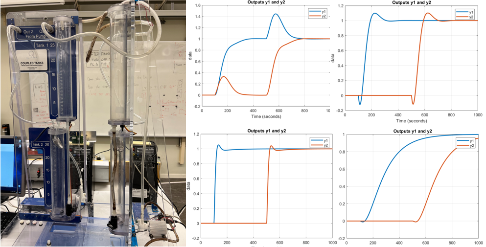
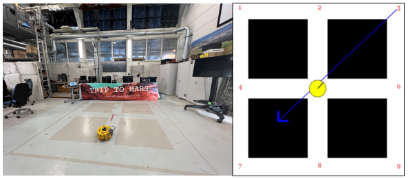
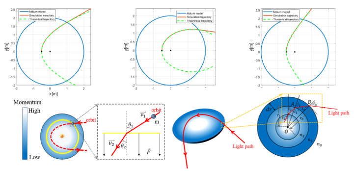
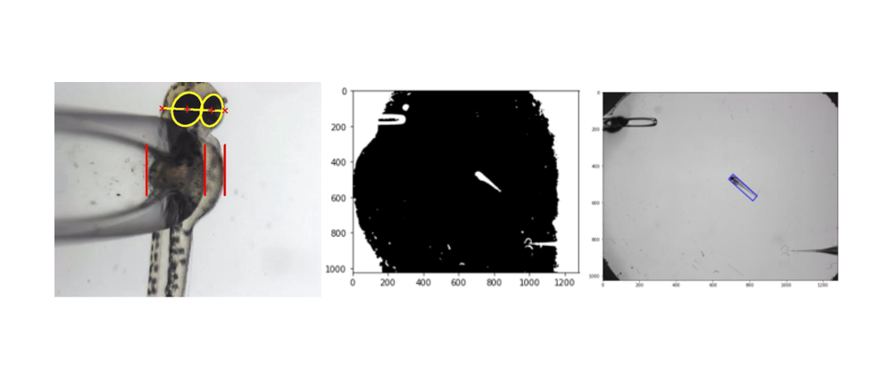
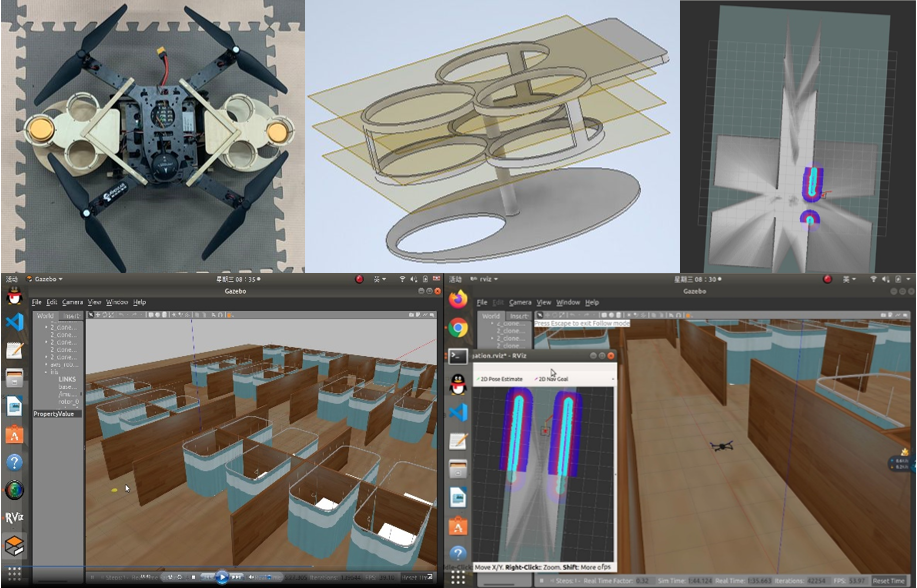
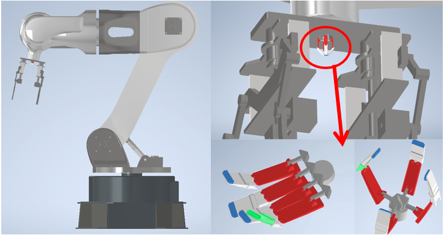

|
Research Projects
The ultimate goal of my research is regarding control theory with its applications in robotics and systems.
Selected projects
Decentralized & Glover-McFarlane Robust Control of the Four-Tank-Process
Time Series Analysis of quarterly Australian Electricity Production from 1956 to 2010
H-infinity Control Design
Decentralized PI Control of the Four-Tank-System
Classical Loop Shaping of Lead-Lag-Design
Implementation of the Pre-defined Behaviors of Differential-drive Robot
Intelligent Micromanipulation robots
Autonomous Navigation Intelligent Delivery Drone
The Modeling of Mechanical Manipulator for the Construction of Moon Camp
Decentralized & Glover-McFarlane Robust Control of the Four-Tank Process
|
 |
Supervisor: Prof. Dr. Elling W. Jacobsen, KTH Hydro Environment Learning Lab, Scool of EECS.
Abstract: This project is a summary of the experiment regarding the control of four-tank process, which can be shaped into minimum phase structure and non-minimum phase structure respectively. The first part of the experiment is concerning theoretical model specification as well as parameters calculations of the four-tank system. In the second experiment, decentralized control and Glover-McFarlane robust control were conducted for the system. Performance analysis was also done to further evaluate the differences between two different approaches.
For performance analysis we analysed the step response and behaviour after external disturbances. We found out that the Glover-McFarlane has robustified the controller as it is supposed to since we get a stable and quite fast response to external disturbances. In contrast, for the minimum phase system the response with decentralized control was not asymptotically stable.
In all experiments we experienced that the non-minimum phase system is slower in step response and disturbance attenuation. This is due to the RHP zero which limits the bandwidth of the sensitivity.
[Project details]
|
Implementation of the Pre-defined Behaviors of Differential-drive Robot
|
 |
Supervisor: Prof. Dr. Dimos V. Dimarogonas, KTH Smart Mobility Lab, School of EECS.
Abstract: The goal of this project is to control a differential-drive robot to make it follow a pre-defined behavior in the workspace. Firstly, we analysed a simple
mathematical model of the robot kinematics. Then, we abstracted the motion of the robot as a finite Transition System T and derived a high-level plan that satisfied a given specification. In order to enable the robot to follow the trajectory that we havd planned, we designed and implemented a hybrid controller, consisting of two parts (rotation controller and go-to-line controller). One was to rotate the robot to a certain orientation and the other to navigate the robot along a straight line. A real world application of this controller could be, for example, a robot that brings medicine to patients in a hospital. The robot cannot drive around like it wants to but has to follow the corridor network of the hospital. Therefore, the robot first rotates until it faces to the point in the corridor it wants to reach and then follows a straight line to this point. If this point is, for example, the room of a patient, the robot stops. Otherwise it starts the procedure again to go to another point in the corridor environment until it reaches its actual goal.
|
A Unique Perspective Approach for Exploring the Light Traveling Path in the Medium with a Spherically Symmetric Refractive Index
|
 |
Supervisor: Prof. Dr. Jun Li, School of Physics, Harbin Institute of Technology.
Abstract: A unique perspective approach based on analogy method is presented to solve the ray equation in the model of the continuous inhomogeneous medium with a spherically symmetric distribution. Basically, in the standard undergraduate physics coursework, the curved ray path caused by refraction in a medium with a continuously varying refractive index has always been a relatively difficult problem to solve. The equation is usually expressed in terms of partial differential equations (PDEs), which cannot be solved by analytical methods. Based on the analogy method, this work proposes the correspondence between ray refraction in an established medium model and the inverse-square central force system, succinctly obtaining their relation equations mathematically. We also verify the correctness of the method by qualitative and quantitative analysis. In terms of theoretical validation, we analyse the relation between Fermat’s principle and Hamilton’s principle, which lays a theoretical foundation for the analogy method. In addition, ray paths in the edium model were also simulated by numerical calculations based on COMSOL Multiphysics, and the results are in perfect agreement with the conclusions.
[Paper is under review!]
|
Intelligent Micromanipulation Robots
|
 |
Supervisor: Prof. Dr. Huijun Gao, Research Institute of Intelligent Control and Systems, HIT.
Abstract: Intelligent Micromanipulation Robots is a project at the interface of medicine and engineering. It is about the design and the construction of a micromanipulation robotic system, with a future aim at treating cancer patients through specific microinjection of cancer cells. It works through taking the cancer cells outside and doing the cell culture, then we conduct micro manipulation on them to find the specific medicine that can treat the disease. In the system design process, we used zebrafish as a model to test the realization of different functions of the system. In this project, I did some research about the micromanipulation and the image processing of zebrafish based on openCV. For fulfilling my task, I worked on various jobs, including researching literature of microscopic methods, gathering references and materials online, and conducting experiments etc..
|
Small and Medium-sized Autonomous Navigation Intelligent Delivery Drone
|
 |
Supervisor: Prof. Dr. Zhan Li, Research Institute of Intelligent Control and Systems, HIT.
Abstract: The ideas about this project were under the background of covid-19 pandemic. In China, the government has built many temporary shelter hospitals, featuring spacious top area and complex ground environment. Most importantly, it called for an urgent need of contactless distribution. Therefore, we decided to design a small and medium-sized intelligent delivery drone to achieve this. During this project, we did the mechanical design by ourselves and we also assembled the self-made cargo compartment on the drone and won the third place in the Engineering Training Ability Competition. Apart from that, we also did the modeling in the simulation environment. We built a simple shelter hospital model on the Gazebo platform and tried to use SLAM to achieve indoor positioning function and built real-time maps in Rviz.
|
The Modeling of Machanical Manipulator
|
 |
Supervisor: Prof. Dr. Liang Ding, State Key Laboratory of Robotics and Systems, HIT.
Abstract: The background of this project was to design a robot to promote the construction of the moon landing camp. We did the modeling of the manipulator as well as the dynamic simulation through solidworks, including stress analysis, explosive view and dynamics animation, etc..
|
|